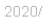
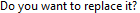
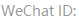

import time
import json
import shutil
import re
import csv
import random
import datetime
from os import listdir
from os.path import isfile, join
from random import randint
from time import sleep
from datetime import datetime
### PATH
working_dir = r"E:/Wechat/"
RScript_dir = r"C:/Program Files/R/R-3.4.3/bin/Rscript"
Wechatexe_dir = r"C:/Program Files (x86)/Tencent/WeChat/WeChat.exe"
Notepad_dir = r"C:/Program Files/Notepad++/notepad++.exe"
list_name = r"list_kwfu.csv"
default_delay = 5
###
def init1(init):
if init == 0:
type(Key.ESC)
time.sleep(default_delay + randint(10,5000) / float(1000))
if not exists():
type(Key.ESC)
wait(,1000)
click()
m = find()
time.sleep(default_delay + randint(10,5000) / float(1000))
mouseMove(Location(m.getX() + 250, m.getY())) # Move to page list region
for i in range(5):
wheel(Env.getMouseLocation(), WHEEL_UP, 200)
time.sleep(5)
def by_y(match):
return match.y
def process_link():
time.sleep(default_delay + randint(10,5000) / float(500))
wait(Pattern(),1000)
rf=Region(App.focusedWindow()).find()
# click(rf)
# wait(2)
click(rf)
wait(5)
# wait(Pattern("1545394938561.png"),1000)
# click("1545394938561.png")
wait(Pattern(),1000)
click()
time.sleep(default_delay + randint(10,5000) / float(500))
p_link = Env.getClipboard()
if p_link.find("mp.weixin.qq.com/s/") == -1:
print("badurl:", p_link)
return
else:
p_str_id = re.sub("http[s]?://mp.weixin.qq.com/s/","",p_link)
p_current_time = time.strftime("%Y%m%d-%H%M%S")
p_bb = {'link': p_link, 'created_time': p_current_time}
p_bb = json.dumps(json.dumps(p_bb))
cmd = RScript_dir + " -e \"source('" + working_dir + "rredis.r')\" " + p_bb
cmd = cmd.replace('\\"',"'")
run(cmd)
print(cmd)
page = Region(App.focusedWindow())
if page.exists():
m=page.find()
# if page.exists("1546590365280.png"):
# m=page.find("1546590365280.png")
# if page.exists("1526721574399.png"):
# m=page.find("1526721574399.png")
# if page.exists("1515120776441.png"):
# m=page.find("1515120776441.png")
click(m)
save_page(p_str_id)
wait(Pattern(),1000)
bk=Region(App.focusedWindow()).find()
click(bk)
def app_crawler_npr(a,b,getpage=True):
def by_y(match):
return match.y
a = a.rstrip('\n\r ')
if exists():
m = find()
click()
time.sleep(default_delay + randint(10,5000) / float(1000))
type(a)
wait(2)
click(Location(m.getX(), m.getY() + 80)) # click the 1st icon ("a")
wait(2)
wait(,1000)
click()
time.sleep(default_delay + randint(10,5000) / float(1000))
wait(,1000)
click()
time.sleep(default_delay + randint(10,5000) / float(1000))
current_time = time.strftime("%Y%m%d-%H%M%S")
wp_name = a + '_' + current_time
if getpage:
save_page(wp_name,True)
# buffer = []
for j in range(1):
if exists():
break
if exists():
all_match = Region(App.focusedWindow()).findAll()
in_order = sorted(all_match, key=by_y) # sort the icons by their y coordinates and put them into a new variable sorted_icons
page = App.focusedWindow()
all_mm = [item for item in in_order]
i = all_mm[(b-1)]
page.click(i)
process_link()
def save_page(code, skip=False):
while True:
wait(Pattern(),1000)
m=Region(App.focusedWindow()).find()
click(m)
wait(2)
click(m)
wait(2)
click(Location(m.getX(), m.getY() + 50)) # Move to page list region
type("a", KEY_CTRL) ### Select all
wait(1)
type("c", KEY_CTRL) ### Copy
# click(m) ### Unselect the selected
notepp_app = App(Notepad_dir) ### Launch Notepad++
wait(3)
notepp_app.open()
wait(3)
App.focus(Notepad_dir)
wait(3)
type("n", KEY_CTRL) ### New Page
wait(2)
type (Key.F1, KeyModifier.SHIFT | KeyModifier.CTRL ) ### Paste HTML code
wait(3)
type (Key.F2, KeyModifier.SHIFT | KeyModifier.CTRL ) ### Save as
wait(3)
fn = code + ".htm"
type(fn) ### Filename
wait(2)
type(Key.ENTER) ### Enter
wait(1)
if exists():
click()
wait(1)
# type("w", KEY_CTRL) ### Close file
type("w", KeyModifier.SHIFT | KeyModifier.CTRL) # close all files
wait(2)
# notepp_app.close() ### Close application
# type(Key.F4, KeyModifier.ALT) # close notepp
type(Key.SPACE, KeyModifier.ALT) # minimize notepp
type("n")
wait(2)
wait(Pattern(),1000)
m=Region(App.focusedWindow()).find()
click(m)
wait(2)
if skip:
fp_fn = working_dir + r"Files/" + fn
cmd = RScript_dir + " -e \"source('" + working_dir + "readhtml.r')\" " + fp_fn
cmd = cmd.replace('\\"',"'")
run(cmd)
break
def getname():
if exists():
click()
time.sleep(3)
wechatid_path = working_dir + 
name = None
if exists(wechatid_path):
m=find(wechatid_path)
doubleClick(m.getTopRight().below(m.h/2).right(10))
type("c", KEY_CTRL)
name = Env.getClipboard().encode('utf-8').strip()
return name
## New notificated account
def get_notified(num_img):
rm = working_dir + num_img
red_mark = Pattern(rm).similar(0.85)
if App != None:
page = Region(App.focusedWindow())
r = Region(page.getX()+310, page.getY(), page.getW()-310, page.getH())
else:
return(None)
return_value = None
if r.exists(red_mark):
all_match = r.findAll(red_mark)
in_order = sorted(all_match, key=by_y) # sort the icons by their y coordinates and put them into a new variable sorted_icons
all_mm = [item for item in reversed(in_order)]
for i in all_mm:
r.click(i)
break
time.sleep(default_delay + randint(10,5000) / float(1000))
current_time = time.strftime("%Y%m%d-%H%M%S")
return_value = getname()
if exists( ):
click()
return(return_value)
def check_time():
nowTime = datetime.now()
startTime = nowTime.replace(hour=7, minute=0, second=0, microsecond=0)
endTime = nowTime.replace(hour=00, minute=30, second=0, microsecond=0)
if startTime < endTime:
return nowTime >= startTime and nowTime <= endTime
else: #Over midnight
return nowTime >= startTime or nowTime <= endTime
def random_scrolling():
count = 0
m=Env.getMouseLocation()
ref = Region(m.getX(),m.getY(),200,200)
while 1:
wheel(Env.getMouseLocation(), WHEEL_DOWN, 3)
m=Env.getMouseLocation()
img = capture(Region(m.getX(),m.getY(),200,200))
if ref.exists(Pattern(img).similar(0.9)):
break
ref = Region(m.getX(),m.getY(),200,200)
count = count + 1
return(count)
def pick_a_name(tc):
for i in range(randint(1,tc)):
wheel(Env.getMouseLocation(), WHEEL_DOWN, 3)
time.sleep(3)
m = Env.getMouseLocation()
click(Location(m.getX()+150,m.getY()+randint(10,50)))
random_name = getname()
# print(random_name)
if exists():
click()
return(random_name)
## Main Part
sim_th = 0.9
random.seed(datetime.now())
notepp_app = App(Notepad_dir)
notepp_app.open()
wait(5)
notepp_app.focus()
type(Key.SPACE, KeyModifier.ALT)
type("n")
wait(3)
wechat_app = App(Wechatexe_dir)
wechat_app.open()
wechat_app.focus()
init1(1)
page = App.focusedWindow()
all_num = [
):
click()
return(return_value)
def check_time():
nowTime = datetime.now()
startTime = nowTime.replace(hour=7, minute=0, second=0, microsecond=0)
endTime = nowTime.replace(hour=00, minute=30, second=0, microsecond=0)
if startTime < endTime:
return nowTime >= startTime and nowTime <= endTime
else: #Over midnight
return nowTime >= startTime or nowTime <= endTime
def random_scrolling():
count = 0
m=Env.getMouseLocation()
ref = Region(m.getX(),m.getY(),200,200)
while 1:
wheel(Env.getMouseLocation(), WHEEL_DOWN, 3)
m=Env.getMouseLocation()
img = capture(Region(m.getX(),m.getY(),200,200))
if ref.exists(Pattern(img).similar(0.9)):
break
ref = Region(m.getX(),m.getY(),200,200)
count = count + 1
return(count)
def pick_a_name(tc):
for i in range(randint(1,tc)):
wheel(Env.getMouseLocation(), WHEEL_DOWN, 3)
time.sleep(3)
m = Env.getMouseLocation()
click(Location(m.getX()+150,m.getY()+randint(10,50)))
random_name = getname()
# print(random_name)
if exists():
click()
return(random_name)
## Main Part
sim_th = 0.9
random.seed(datetime.now())
notepp_app = App(Notepad_dir)
notepp_app.open()
wait(5)
notepp_app.focus()
type(Key.SPACE, KeyModifier.ALT)
type("n")
wait(3)
wechat_app = App(Wechatexe_dir)
wechat_app.open()
wechat_app.focus()
init1(1)
page = App.focusedWindow()
all_num = [ ,
, ,
, ]
while 1:
while check_time():
# while 1:
now1 = datetime.now()
for num_img in all_num:
red_dot = get_notified(num_img)
if red_dot is not None:
try:
app_crawler_npr(red_dot,1)
except:
print("Error at app_crawler_npr")
init1(0)
now2 = datetime.now()
if (now2.hour != now1.hour):
init1(1)
# rname = pick_a_name(total_count) # Pick an account randomly
# if rname is not None:
# app_crawler_npr(rname,1)
# init1(0)
time.sleep(600)
]
while 1:
while check_time():
# while 1:
now1 = datetime.now()
for num_img in all_num:
red_dot = get_notified(num_img)
if red_dot is not None:
try:
app_crawler_npr(red_dot,1)
except:
print("Error at app_crawler_npr")
init1(0)
now2 = datetime.now()
if (now2.hour != now1.hour):
init1(1)
# rname = pick_a_name(total_count) # Pick an account randomly
# if rname is not None:
# app_crawler_npr(rname,1)
# init1(0)
time.sleep(600)